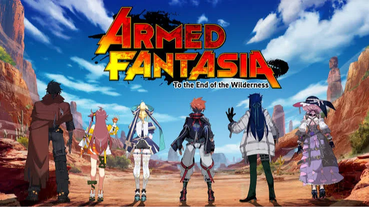

Luiso · 25 de septiembre de 2026
Una de las grandes apuestas de los fanáticos de los JRPG clásicos acaba de llegar a su fin. Digital Bros, compañía matriz de 505 Games, confirmó que el desarrollo de Armed Fantasia: To the End of the Wilderness fue discontinuado.
El proyecto había sido presentado como un sucesor espiritual de Wild Arms y había conseguido una importante financiación colectiva antes de incorporar a 505 Games como editora.
Según los resultados financieros correspondientes al ejercicio fiscal terminado en junio de 2026, Digital Bros decidió abandonar Armed Fantasia después de revisar nuevamente sus perspectivas.
La compañía mencionó varios intentos de modificar el gameplay, las condiciones cambiantes del mercado y el nivel de inversión adicional necesario para completar y lanzar el RPG. Digital Bros también incluyó otros proyectos cancelados dentro de la misma revisión de cartera.
Armed Fantasia había surgido en 2022 a través de una campaña de Kickstarter realizada conjuntamente con Penny Blood, el sucesor espiritual de Shadow Hearts.
La campaña consiguió 379.328.385 yenes, superando ampliamente su objetivo inicial y reuniendo a más de 17.000 patrocinadores.
El proyecto contaba además con varios nombres vinculados históricamente a Wild Arms. Entre ellos estaban Akifumi Kaneko, creador de la franquicia, y Tomomi Sasaki, responsable del diseño de personajes. También participaban compositoras y compositores relacionados con anteriores entregas.
La propuesta buscaba recuperar la combinación de JRPG tradicional, ambientación de western fantástico, exploración y combates por turnos, pero trasladándola a una producción moderna.
Su sistema de combate, denominado Cross Order Tactics, pretendía darle una identidad propia en lugar de limitarse a reproducir las mecánicas de Wild Arms.
La cancelación resulta especialmente llamativa porque el proyecto había mostrado señales de progreso durante 2026.
En marzo, el equipo había informado que contaba con una versión vertical del juego que reunía el escenario principal, sistemas de gameplay y distintos elementos integrados del proyecto. Ese tipo de versión sirve como demostración de cómo funcionarán conjuntamente los principales componentes de una producción.
Sin embargo, Digital Bros consideró finalmente que los cambios necesarios y la inversión adicional para llevar el juego hasta su lanzamiento ya no justificaban continuar con el desarrollo.
La compañía informó además un deterioro contable no monetario de 18,7 millones de euros, de los cuales 17,6 millones correspondieron a cancelaciones de proyectos. Esa cifra corresponde al conjunto de proyectos discontinuados y no significa que todo ese dinero haya sido invertido exclusivamente en Armed Fantasia.
Uno de los interrogantes más importantes queda del lado de Kickstarter.
Hasta el momento, la confirmación de Digital Bros establece que el desarrollo fue discontinuado, pero no explica qué ocurrirá con las recompensas de los patrocinadores ni si habrá algún tipo de compensación.
Por eso, quienes financiaron el proyecto deberán esperar una comunicación específica de Wild Bunch Productions, 505 Games o de la propia campaña de Kickstarter antes de asumir qué sucederá con sus aportes.